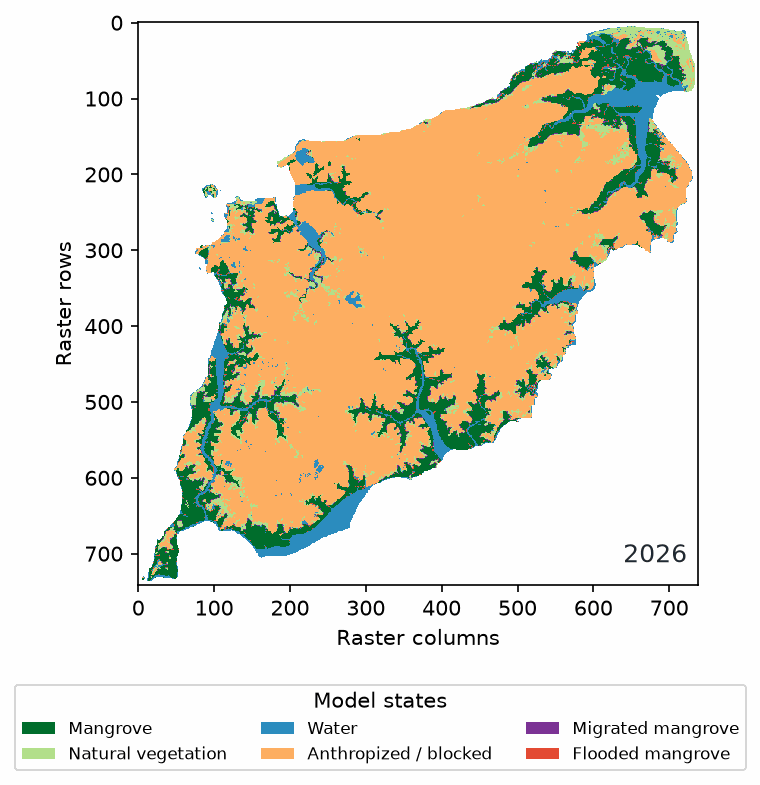
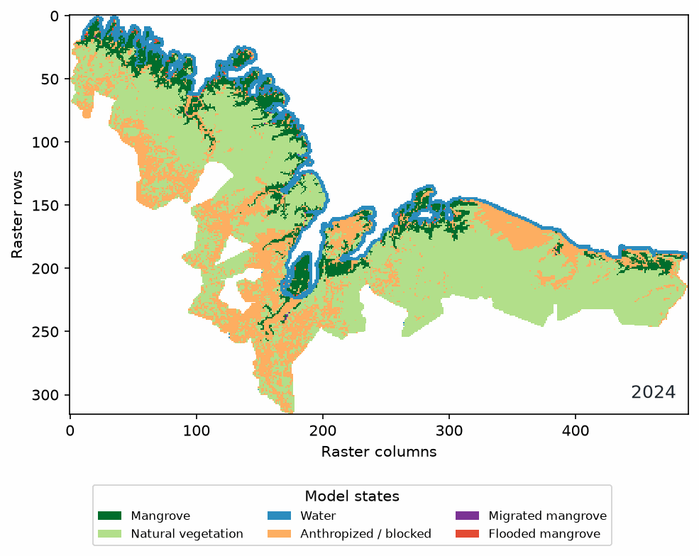

Cellular rules
Each cell evaluates its elevation, state, and up to eight neighbours to determine the next annual state.
Spatial cellular model for mangroves
Load aligned raster data, define the classes and scenario, and inspect how each cell changes year by year in BR-MANGUE Studio.
Windows 10/11 · 64-bit · Python desktop application · No separate Python installation

Demonstração real gerada pelo Studio: 1.083.556 células, de 2025 a 2100. O exemplo mostra o funcionamento do modelo e não é uma previsão da ilha.
What the Studio does
The application makes the modelling decisions visible: you can inspect the source classes, coordinate reference, parameters, and transitions before interpreting a map.
Each cell evaluates its elevation, state, and up to eight neighbours to determine the next annual state.
Use continuous processing when the grid fits in memory, or persistent blocks for larger domains and recoverable runs.
Review annual maps, trajectories, class changes, transition tables, CSV data, GeoTIFFs, and animation frames.

See the model in motion
Use the animation to check the direction of change, then open the annual tables and figures to quantify it.
How to run a scenario →Performance
Continuous processing is usually faster when the active raster fits safely in RAM. Persistent blocks trade speed for capacity and recovery on very large coastal domains.
The reference area is the Costa de Manguezais de Macromaré da Amazônia (CMMA), at 30 m, with a 2024 land-cover map and ANADEM digital terrain model. Read the benchmark note →
Current release
Windows 10 and Windows 11, 64-bit. The executable includes the Python runtime and required libraries. macOS and Linux builds are not available yet.
Open the download pageProject context
The first BR-MANGUE version was developed between 2010 and 2014 in Lua with TerraME by Dr. Denilson da Silva Bezerra. BR-MANGUE Studio reimplements the model in Python as an integrated desktop application developed at the Federal University of Maranhão by MSc. Felipe Martins Sousa, in partnership with the original author.
Documentation
Find the input requirements, class mapping, coordinate reference, processing engines, outputs, and troubleshooting steps in one place.